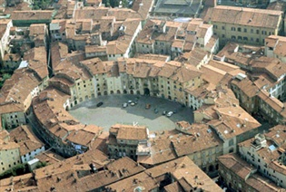
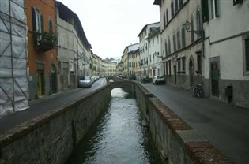
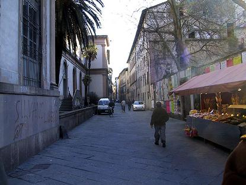
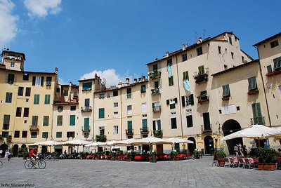
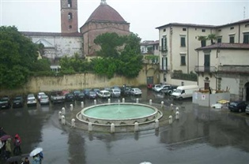

"ORAÇÃO"
(Composta por SANTA GEMA GALGANI)
Eis-me aqui, SENHOR, de joelhos, aos Vossos pés, para vos manifestar o meu reconhecimento e gratidão pelas contÃnuas graças que me concedeis. Sempre que Vos invoco, me atendeis. Cada vez que a Vós recorro, me consolais.
Como Vos exprimir, SENHOR, toda a emoção que me vai à alma? Por tudo Vos dou graças, mas, se for do Vosso agrado, Vos peço ainda que me concedais esta particular graça [.....................................pede a graça que deseja obter........................].
Dirijo-Vos esta súplica, SENHOR, porque sois Todo-Poderoso. Tende piedade de mim! Que em tudo se faça a Vossa SantÃssima Vontade. Amém.
(PAI NOSSO + AVE MARIA + GLÓRIA)
"FOTOGRAFIAS DE LUCCA - ITALIA"





"INFORMAÇÃO PRECIOSA"
Este Site foi construÃdo pelo Apostolado dos Sagrados Corações . Convidamos-lhe a visitar o PORTAL DO APOSTOLADO, nele encontrará uma apreciável quantidade de Sites sobre o CRIADOR, o ESPÃRITO SANTO, JESUS DE NAZARÉ, sobre NOSSA SENHORA, os ANJOS DO SENHOR e Sites que apresentam a Obra de diversos SANTOS. Todos eles elaborados com muito amor e dedicação, fundamentados nas Sagradas Escrituras, na Tradição Cristã, nas Manifestações Sobrenaturais e na Vida e Obra dos Santos, sobretudo com a intenção de somente informar a Verdade.
"FIRMAS DE BUSCA"